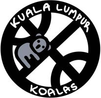

EKIPE
Rok Verčko Kuala Lumpur Koalas

Team owner: Rok Verčko
Joined league: 2017 (season 1)
History: Veratti Ambasada (seasons 1-4),
Gramoznica Vikings (season 5)
Arena: Putra Indoor Stadium
Capacity: 16.000
Location: Kuala Lumpur, Malezija
Average ranking: 7.50 (9th)
| Sezona | Uvrstitev |
|---|---|
| 2017/18 | 8 |
| 2018/19 | 8 |
| 2019/20 | 11 |
| 2020/21 | 9 |
| 2021/22 | 12 |
| 2022/23 | 4 |
| 2023/24 | 7 |
| 2024/25 | 1 |
| 2025/26 | ... |
| AVERAGE | 8.43 |
Intervju - ROK VERČKO (september, 2022)
Opravili smo pogovor z Rokom Verčkom, managerjem, ki je po par porazno slabih sezonah zdaj vendarle že nekaj časa v boljši formi. Tokrat mu bo delo olajšal tudi ugoden žreb draft orderja, saj so mu bogovi namenili kar prvi pick.
1) V zadnjem intervjuju smo se uglavnem pogovarjali o vaših konstantnih uvrstitvah izven deseterice. Zdaj temu ni več tako, kaj se je spremenilo?
Je res, moram priznati, da v preteklosti nisem imel sreče s sestavo ekipe, ki bi lahko skozi celotno sezono kazala predstave na visokem nivoju in predvsem ostala zdrava. Vseeno pa smo v zadnjih dveh sezona utišali vse hejterje Koal
in posegli višje po razpredelnici. Vsekakor nam bo prvi pick stvari še olajšal in računamo, da se tokrat povzpnemo še višje - na stopničke.
2) Kaj je botrovalo k selitvi franšize iz Gramoznice in zakaj ravno v Kuala Lumpur?
Selitev iz Gramoznice je bila težka, a nujno potrebna. Kljub mnogim lepim spominom nastalih v neposredni bližini centra metropole Ravne, sem mnenja, da bo v Kuala Lumpurju sonce še naprej sijalo na našo franšizo.
3) Katerega managerja se najbolj bojite in katerega najmanj. Zakaj?
Najprej bi rad dejal, da se v ekipi Koal prav nikogar ne bojimo, je pa res da imamo veliko mero spoštovanja do g.Urnauta in g.Mrdavšiča, saj skozi leta kažeta klaso v in izven pisarne. Najbol veselimo pa se obračunov z vrhovnima trashekoma,
torej starejšim bratom Kavtičnik in po našem mnenju najbol prevarantskim manegerjom lige, Jurharjem. Upam, da slednji letos ne bo uspel bogatiti svoje ekipe na račun ekip s poškodbami, vsem ostalim pa želim čim uspešnejšo sezono.
Zaključna misel
Ste vedeli, da Koala v aboriginskem jeziku pomeni no-drink? No, mi bi vsekakor Roku in njegovim koalam v letošnji sezoni privoščili čimveč zmagovitih drinkov, sploh po tej lepih pohvalah in grajah pri zadnjem vprašanju, s katerimi bi se težko bolj strinjali.